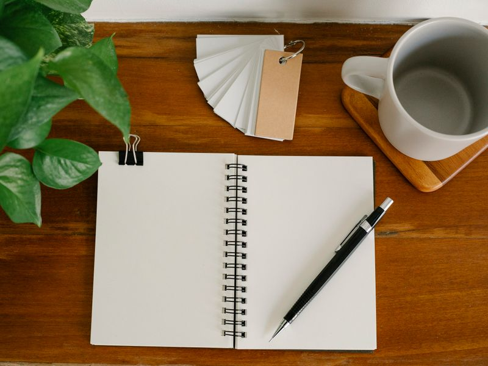

Меньше, но ближе
Понятные вещи, которые легко вписать в свой день.
МАЛЕНЬКИЕ РАДОСТИ РАБОЧЕГО СТОЛА
Записать мысль. Сделать паузу. Оставить напоминание.
Продуманные мелочи для дня в своём ритме.

Ничего лишнего.
Только то, что рядом.
ВЫБИРАЙТЕ СВОЁ
Ничего не нашлось. Попробуйте другое название, категорию или сбросьте фильтры. Избранное можно добавить сердечком на фото.
УЖЕ СОЧЕТАЮТСЯ
Три вещи для одного настроения. Стоимость набора — сумма товаров, без скрытых условий.
МЕСТО ДЛЯ СЛУЧАЙНОСТИ
Иногда нужная вещь находится сама. Доверьте нам одну маленькую находку.
ИСТОРИЯ «ТИХИХ ВЕЩЕЙ»
По легенде нашего магазина, однажды иллюстратор Аня и редактор Миша расчистили старый стол у окна. На нём остались только блокнот, кружка и маленькое растение. И оказалось: для хорошего дня иногда нужно совсем немного.
Так появилась идея «Тихих вещей» — места, где выбирают не ради новой покупки, а ради приятного ежедневного ритуала. Записать мысль от руки. Заварить чай. Найти время для рисунка.
«Пусть у каждой вещи будет своё место.
А у вас — немного места для себя».
Понятные вещи, которые легко вписать в свой день.
Никаких таймеров и надуманных поводов торопиться.
Цвет, форма и маленькие привычки создают настроение.
ЕЩЁ ПАРА СЛОВ
Это учебный магазин: товары можно выбирать и складывать в корзину, но оплаты, доставки и отправки заказа здесь нет. Ассортимент и цены демонстрационные.
Кнопка добавляет по одному экземпляру каждого из трёх товаров. Их можно менять и удалять отдельно. Повторное нажатие добавит ещё один набор.
Нажимайте «−», пока количество не станет нулевым, или воспользуйтесь кнопкой «Удалить». Последнее удаление можно отменить.
Корзина и избранное работают в текущей вкладке и очищаются при перезагрузке страницы.
Мы используем локально сохранённые фотографии Pexels. Ссылки на оригиналы есть в разделе «Источники фотографий» внизу страницы. Снимки иллюстрируют вымышленный ассортимент.
Выберите вещь, которая сделает ваш день приятнее.
Корзина · 00 ₽